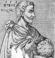

Forums galactiques > Taverne galactique : lieu de discussion informel > concours de littérature
lord bloody 15/03 ETU 19:53 | arréte il est simpas futursp !!! mais je crois que nous l'avons un peu énervé. mais enfin il ne faut pas tricher!! on es la pour lire de beau RP pour rire , révé , tramblé ,etc..... émeuvez nous !!!!!! |
Midas 17/03 ETU 20:51  | A tout les comandant,Lord bloody est dans une grosse merde irl et ne poura peut etre plus aller sur apo et internet,donc en attendent je m'occupe de sont compte. des à present,quand vous enverez des mp à bloody,c'est moi qui vous repondrait; Je m'occupe aussie du concour de litterature. Cordialement Midas. |
Ghozer 17/03 ETU 20:57 | File moi ses planetes ! Juste une il vérra rien ^^ |
Midas17/03 ETU 20:59 | PAS QUESTION. |
Ghozer17/03 ETU 21:39 | Quel égoïste ! |
nerka18/03 ETU 16:53 | MANGER GHOZER AU FRUIT !!!(je dois faire de la pub pour lui) |
Bouh20318/03 ETU 17:33 | Mon pti-gars est mort à cause du Ghozer aux fruits, alors on se calme ! Sinon, j'aimerai bien savoir quand on aura les résultats du concours de littérature ? |
thorgal12 18/03 ETU 17:44 | Aprés le 30 mars, mais vu que c'est Midas qui a repris le flambeau, faudra voir comment il fait...... |
Midas19/03 ETU 10:26 | Je fait pareil,vous aurez les resultat apres le 30 mars. |
thorgal1219/03 ETU 12:32 | Tu pourais en dire plus....... |
Midas19/03 ETU 16:46 | Je le poste aussi ici pour connaitre vos commantaires. L’univers. L’univers (l’espace), est composé de galaxie ( de système solaire). Qui lui est composé d’une étoile,de planètes,de comètes,d’astéroïdes et de poussières de particule de plasma. Notre système solaire est constituer de notre étoile,le soleil et de neuf planètes qui tourne autour: Mercure,vénus,Terre,Mars,Jupiter,Saturne,Uranus,Neptune,Pluton. Cependant une dixième planète fut découverte. Parlons des plus connue,ces planètes sont classés en deux groupe: Les planètes interne ou tellurique( Mercure,Venus,Terre,Mars) et les planètes externes(Jupiter,Saturne,Uranus,Neptune,pluton.)Les internes sont les plus petites et les plus proche du soleil:Mercure est à 60 million de km du soleil. Voici dans l’ordre les distances qui sépare du soleil en million de kilomètre, les trois autres: 110 ,150, 230 . les externe sont les plus grosse et les plus éloigner du soleil:Jupiter est à 778 million de Km du soleil. Et voici dans l’ordre les distances qui sépare du soleil en million de kilomètre, les trois autres:1427,2871,4497,5913. Maintenant parlons un peu des 2-3 connue. Mercure est une boule rocheuse,aride et dépourvue d’atmosphère Il fait très chaud sur sa face exposé au soleil et un froid extrême règne sur sa face opposée car Mercure ne possède pas d’atmosphère pour retenir la chaleur du soleil. Venus est la planète la plus chaude avec 500°c comme température au sol. Elle est aussi composé essentiellement de gaz carbonique. La Terre a de l’oxygène dans sont atmosphères et c’est la seul planète de notre système solaire qui possède des océans. Sur Venus il fait trop chaud,l’eau s’évapore. Sur Mars Il fait trop froid donc l’eau reste geler au sol. Fessons simple,Jupiter est la planète la plus grosse du système solaire. Elle est 1 318 fois plus grosse que la terre ,elle pourrait contenir aisément toute les autre. En simplifiant Jupiter est une énorme boule de gaz avec un champ magnétique extrêmement puissant. Saturne est une énorme planète liquide avec un noyau d’éléments liquide en fusion. Les nuage qui recouvrent Saturne circulent à une grande vitesse. Ils sont extrêmement froid étant donnée la grande distance qui sépare Saturne du soleil. La Terre en comparaison reçoit 100 fois plus de chaleur du soleil que Saturne. Quant au célèbre anneaux qui l’entour au niveau de l’équateur,ils se composent de milliards de particules de glace et de poussière étincelantes. La dixième planète est une jumelle de la terre mais pour des raison que je ne connaît pas,elle est inhabitable et cette planète ne possède pas encore de nom. Parlons d’autre chose maintenant,la Lune circule autour de notre cher planète bleu,elle est 100 fois moins éloigner de la Terre que Venus la planète la plus proche de nous. Sur la Lune il n’y a ni d’eau ni d’atmosphère. La Lune tourne autour de la terre en nous montrant toujours la même face,donc elle possède une face cacher. La Lune possède des montagnes arrondi très différente des notre. Maintenant je vais vous parler de notre étoile,le soleil,c’est une étoile toute à fait banale comme toute celle que nous voyons dans le ciel nocturne. Pourtant sans elle,la Terre serais plonger dans l’obscurité et vide de tout vie. Je pourrais vous en dire long sur le soleil mais sa serait trop long et trop dur à expliquer. Maintenant parlons des autre étoile, l’univers est infini et il possède des milliards d’étoile. Supposons que chaque étoile est un soleil,il y a sûrement des planète autour. Dans ces milliards de planète inexploré et inexplorable car il faudrait environ 10 vie pour atteindre l’étoile la plus proche de notre système solaire. Mais imaginons,je pense et je suis même sur qu’il y à d’autre être vivant dans l’univers que nous. Je ne vous parle pas d’aliène envahisseur ni de petit homme vert mais je vous parle de gens comme vous et moi qui possède peut être un niveau de technologie plus élevé et d’autre moins élevé que nous. Se serais un monde si sur les milliards de planètes qui compose l’univers, seul la terre est habité. se serait génial si un jour nous atteignons un niveau de technologie assez élevé pour aller à la rencontre de personne qui partage nos même point de vue. Mais si se jour arrive,ni vous,ni moi serait pressent pour le voir,donc pour l’instant se n’est qu’un rêve,un grand et beau rêve mais c’est quand même un rêve. |
| Pythagore  20/03 ETU 14:24 | Voici mon oeuvre: simple et rapide. Vélasquez le soldat Il était une fois, un soldat du nom de Vélasquez. Il était passionné par les animaux merveilleux et il collectionnait des oeufs et des plumes d'oiseaux. Une nuit d'été, il fit un rêve extraordinaire dans lequel il vit un monde rempli d'animaux légendaires. Au petit matin, il partit et s'enfonça dans la forêt de Xalir. Dans ce bois, il y avait des sapins verts, des arbres qui commençaient à perdre leurs feuilles. Sur son chemin, il croisait quelques petits animaux. Ce n'était pas la première fois qu'il voyageait, il avait déjà rendu service au roi qui lui avait demandé de délivrer sa fille en échange de sa liberté. Il s'arrêta au coeur de la forêt pour se reposer mais il entendit des cris « à l’aide, à l’aide ». Vélasquez courut à toutes jambes vers les voix qui s'écriaient vers lui. Enfin arrivé, il vit un vieil homme ensevelit dans les sables mouvants. Le généreux Vélasquez prit un branchage et le tira de toutes ses forces. Sain et sauf, le vieillard le remercia et se présenta. C'était un sorcier abandonné par son groupe car il refusait de donner un objet d'une très grande valeur. Vélasquez lui raconta l'objet de sa quête. En entendant cette histoire, le sorcier nommé Jovanni fut surpris. _ Ce que tu me dis là m'intéresse, car, j'ai la clé qui permet d'ouvrir la porte d’Ewazan, c'est-à-dire le monde que tu cherches. J'ai été banni à cause de cette clé, je voulais la donner à quelqu'un de confiance, la voici. Après avoir terminé ses paroles, le vieil homme lui donna une épée bleuâtre et une lettre de même couleur. Jovanni le bon partit à petites foulées. Quand il ouvrit la lettre, Vélasquez découvrit l'emplacement exact de la porte magique, il y avait écrit : "Quand tu découvriras la porte, enfonce ton épée à son seuil mais ne regarde pas tout de suite le monde d'Ewazan..." Vélasquez plein de courage partit le plus vite possible à la recherche de l'animal. Un mois plus tard, il se retrouva face à la porte mystérieuse mesurant sept mètres de hauteur. Sur cette porte de chêne, il y était gravé les visages des quinze aventuriers qui avaient découvert le monde d'Ewazan . Parmi eux, se trouvaient trois gnomes, trois elfes, trois nains, trois centaures et trois humains dont Jovanni. Fou de joie, Vélasquez prit son épée et l'enfonça le plus près possible. Soudainement la porte s'ouvrit... Vélasquez oubliant les paroles de Jovanni, pressé d'arriver à son but, regarda le monde magique. C'est alors qu'un minotaure surgit de nulle part. La créature mi-homme, mi-taureau avait des cornes suffisamment grosses pour tuer un sanglier. Il était grand, robuste et fort. Il devait être là depuis longtemps. Vélasquez qui venait de comprendre sa maladresse, s'enfuit aussi vite que l'éclair car il ne faisait pas le poids contre le minotaure. L'animal l'empêchait de récupérer l'épée magique qui laissait la porte ouverte. La créature se rapprochait peu à peu. Quand il fut à quelques centimètres de Vélasquez, le minotaure lui grugea le bras. Voyant l'être humain immobile, il s'en alla. Vélasquez regarda autour de lui et vit une silhouette. C'était le sorcier Jovanni qui le guérissaient de ses blessures avec ses pouvoirs magiques. Il avait l'épée bleuâtre dans une main et un parchemin dans l'autre. Vélasquez, en forme, prit son arme et partit à la recherche de son adversaire. Dans une grotte, le monstre se régalait de baies succulentes. Il fut surpris de voir Vélasquez en vie et, se lança à sa poursuite. Le minotaure paraît toutes les feintes de son ennemi. Après une lutte acharnée, Vélasquez trancha la tête de la bête qui tomba au sol. Jovanni accourut, vit le sang bleu du minotaure et s'écria. _Tu as réussi !Allons chercher ton animal merveilleux. Le monde d'Ewazan était peuplé de drôles de petits animaux. La verdure permettait aux licornes de brouter. Vélasquez put apercevoir un coqcygrue (oiseau croisé avec le coq, le cygne et la grue). C’est alors qu'un animal rouge feu s'avança vers eux, Jovanni cria. _ Attention c’est un flamanga ! Le flamanga s'approcha de Vélasquez, aucun des deux n'avait peur. Vélasquez le toucha et la créature se laissa faire. Jovanni étonné lui dit : _ Normalement il s'enflamme quand il se sent en danger. Mais là il est confiant, cela signifie qu’ une grande amitié naîtra entre vous deux. Le flamanga déploya ses ailes et survola les deux compagnons qui le suivirent. Le flamanga était une créature particulièrement intelligente et connaissait tout de notre monde. En passant dans la forêt de Xalir, ils furent attaqués par des animaux échappés d'Ewazan. Un centaure galopa vers le flamanga qui s'enflamma directement. Prit de panique, le centaure ainsi que ses alliés s'enfuirent. Vélasquez arriva avec ses compagnons dans sa demeure. Ce voyage lui avait permis de se faire de nouveaux amis. À partir de ce jour, Vélasquez, Jovanni et le flamanga vécurent de nouvelles aventures aussi palpitantes que celle-ci. FIN |
thorgal1220/03 ETU 14:50 | Heu...il y a un post exprés pour mettre vos texte, pour facilité le vote du juris....... Mais je voit que Midas ne la pas dit........ |
Pythagore21/03 ETU 18:06 | il faut le mettre ou ? |
Midas21/03 ETU 19:29 | Je lai dit,il faut mettre vos texte sur le topic texte du concourt de littérature. Cordialement |
N'tyr06/05 ETU 22:00 | On ne saura jamais qui c'est qui à gagné... |
Lord bloody II 07/05 ETU 19:47 | snif oui domage.........ralala si je n'avait pas du m'absenter il y aurait eu un super RP et une coquéte somme pour le gagnant. sa montre a quel point je suis indispensable a cette galaxie ;) |
Forums galactiques > Taverne galactique : lieu de discussion informel > concours de littérature